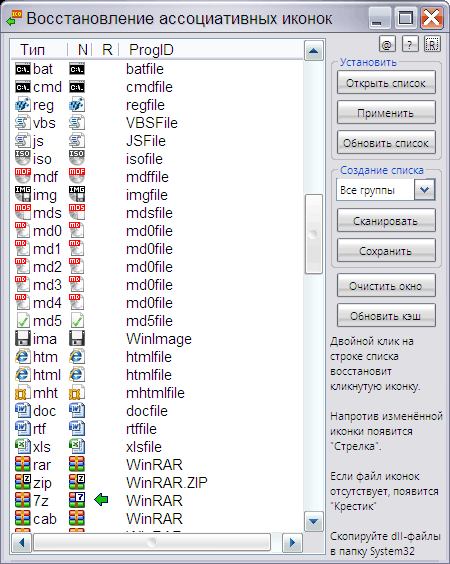

Recovery_associative_icons
Назначение
Восстановление иконок после смены ассоциаций (WinXP или LiveCD).

утилита для восстановления иконок файлов в проводнике после переназначения их какой либо программой.
Как часто после установки какой либо программы она меняет иконки на свои, иногда эти иконки одинаковые для всех типов файлов, например медиа-файлы, на которых отображается плеер. Также иконки могут заменятся при восстановлении ассоциаций в программе. Чтобы иконки были всегда такие, к которым вы привыкли, просто сохраните их в конфигурационный файл, используя который можно восстановить предыдущие иконки оставляя при этом ассоциации нетронутыми. Важно, чтобы ресурсы, которые содержат иконки не удалялись и находились в тех же каталогах.
Управление утилитой.
Если отсутствует конфигурационный файл associative_icons.txt, то при запуске утилита сканирует текущие расширения указанных групп, которые вы можете сохранить в конфигурационный файл.
К программе добавлены 4 файла dll с иконками и конфигурационный файл к ним. Чтобы применить эти иконки, нужно скопировать dll файлы в системную папку system32. Чтобы изменить каталог, нужно указать прямые пути к dll-файлам. Если иконки в проводнике не изменились, то нажмите кнопку "Обновить кэш".
1. Рекомендуется сохранить все иконки перед какими либо манипуляциями, для этого нужно создать список всех расширений и сохранить в файл.
2. Двойной клик на строке списка восстановит кликнутую иконку.
3. Иконки, требующие восстановления помечены индикатором в виде зелёной стрелки.
4. Если прочитанный из текстового списка dll-файл иконок отсутствует (или exe, ico), то будет помечен красным крестиком
5. Иконки с одинаковым ProgID не могут быть разными. Например у 7z для каждого расширения свой ProgID, а у WinRAR практически у всех одинаковый. Поэтому если у вас ассоциации с WinRAR, то не стоит менять иконки, так как будет использоваться одна иконка для всех - последняя выбранная для ProgID = WinRAR
6. Если вы применили иконки, но они не отображаются для соответствующих файлов в эксплорере, это значит, нужно скопировать dll в системный каталог. Программа видит текущий каталог и для неё это работает, а операционная система ищет файлы с набором иконок в системном каталоге. А также нажмите кнопку "Обновить кэш".